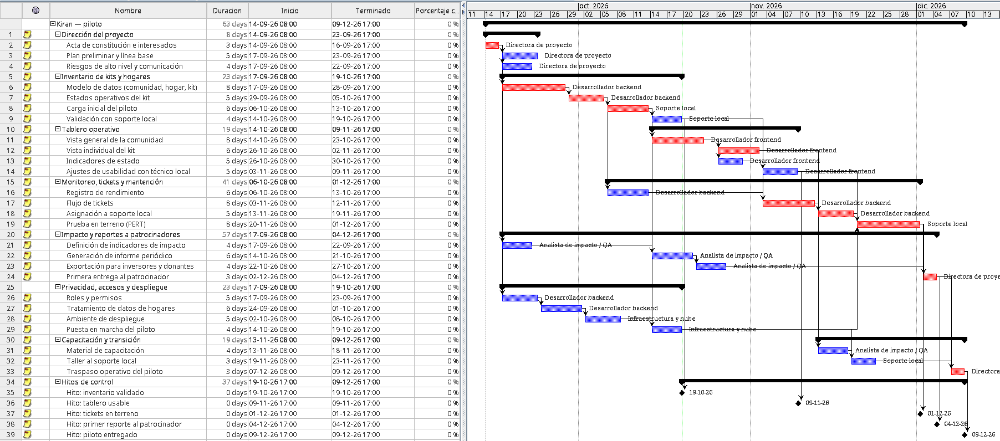
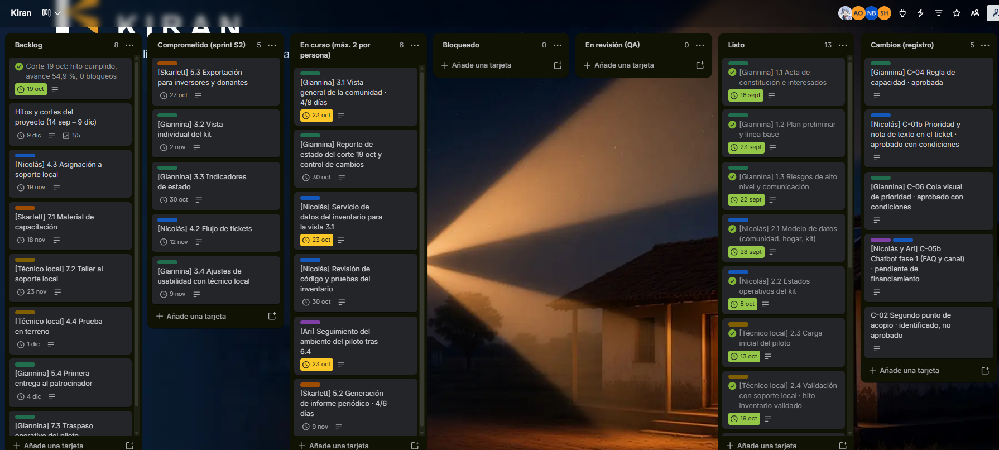
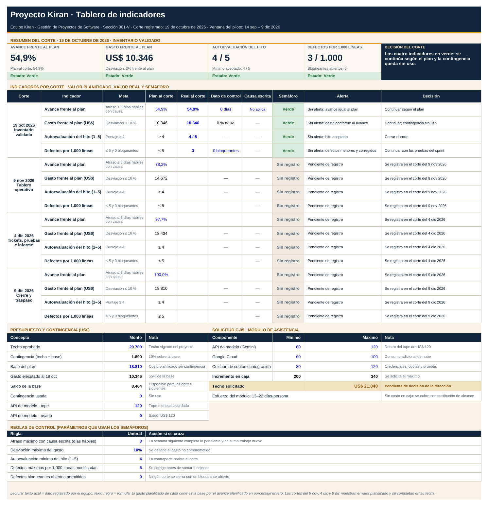
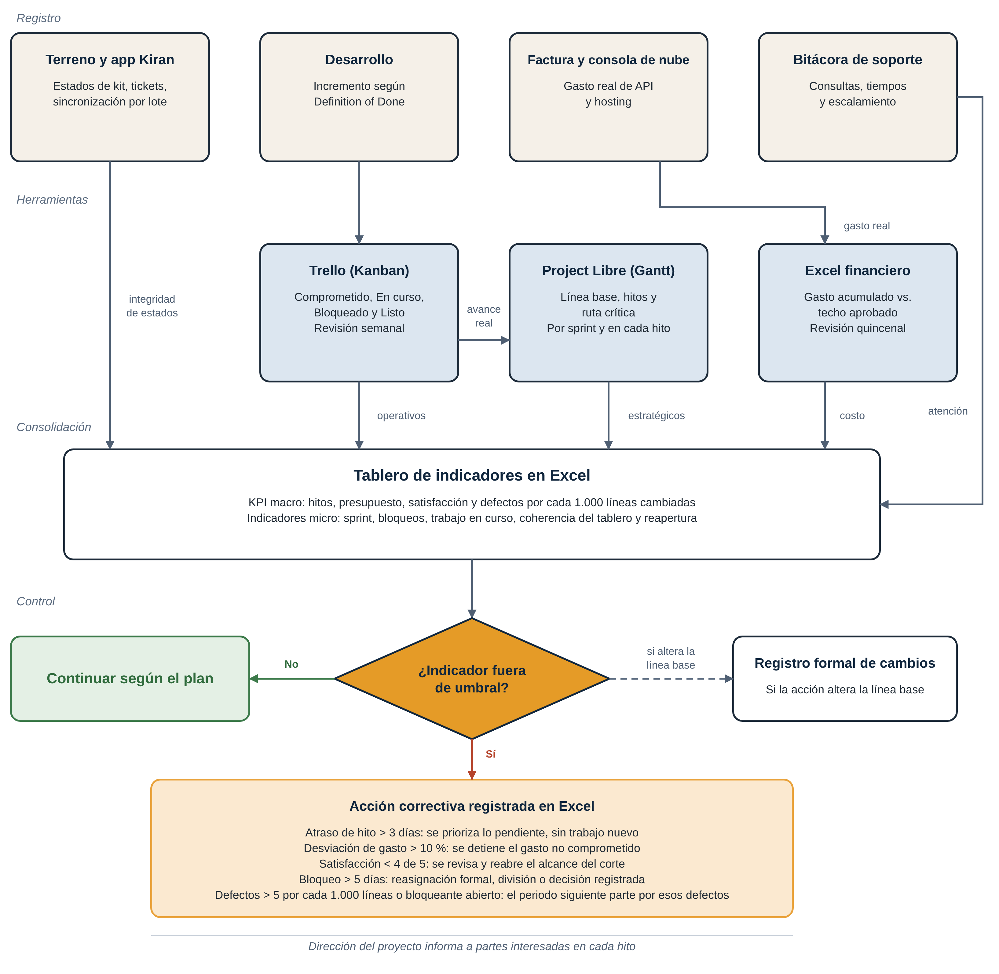
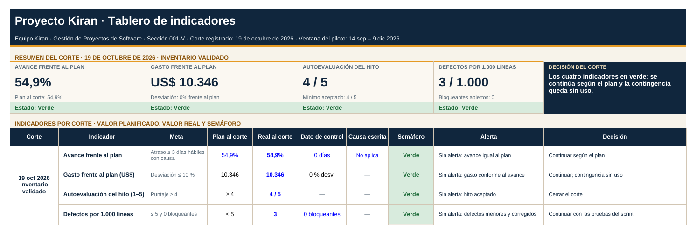

Project LibreFechas · por sprint y en cada hito
4/4
hitos en fecha; hasta 3 días hábiles de atraso solo con causa registrada.
Reporte de estado·Decisión solicitada a la dirección
Visibilidad que mantiene la energía activa.
GPY1102 Gestión de Proyectos de Software·Evaluación II·Monitoreo y control

hitos en fecha; hasta 3 días hábiles de atraso solo con causa registrada.

del sprint cumplido; máximo 2 tarjetas en curso por persona.

de desviación sobre el techo vigente; si se supera, se detiene el gasto no comprometido.

Terreno y app Kiran, desarrollo, factura y consola de nube, y bitácora de soporte generan el dato.
Trello ordena el trabajo de la semana, Project Libre las fechas por sprint e hito, y el Excel financiero el gasto quincenal.
El tablero de indicadores en Excel reúne los indicadores estratégicos y operativos del corte.
Si un indicador sale de umbral, se registra una acción correctiva; si cambia la línea base, pasa al registro formal de cambios.
La dirección del proyecto informa a las partes interesadas en cada hito.
Figura 1.Flujo de información del sistema de monitoreo y control del proyecto Kiran.
Atraso de hasta 3 días hábiles solo con causa registrada.
Sobre 10 % de desviación se detiene el gasto no comprometido.
No se cierra un hito sin evidencia; con puntaje bajo 4 se reabre.
Por cada 1.000 líneas cambiadas, con cero bloqueantes abiertos al corte.
Historias comprometidas que se completan en el sprint.
También en el tableroIntegridad de estados de kit: sin cierre de hito si falla. Coordinación en terreno: puntaje ≥ 4. Reapertura < 20 %. Máximo 2 trabajos en curso por persona.

Kits con hogar, responsable y estado.
Tablero usable por la contraparte.
Primer informe de impacto.
Cierre formal el 9 de diciembre.
La semana siguiente completa lo pendiente y no suma trabajo nuevo.
Se detiene el gasto no comprometido.
La contraparte reabre el corte.
Reasignación formal entre los cuatro roles.
Se registra la solicitud.
Adjuntar una foto en cada ticket.
Alcance, tiempo, costo y calidad.
Impacto en las cuatro dimensiones, detallado abajo.
Aprobar, condicionar o rechazar.
Se rechaza la foto. Se acepta prioridad y nota de texto, sin archivo.
Registro de cambios y Project Libre.
Sale del sprint una historia del mismo tamaño.
Solo lo registrado y con capacidad.
Prioridad y nota entran en el sprint del 4 dic, si caben.
La nota de texto no abre almacenamiento ni un producto nuevo.
La semana del 5 al 9 dic es de cierre; no se usa para construir.
Si la desviación supera 10 %, ese gasto se detiene.
La meta sigue en ≤ 5 defectos por cada 1.000 líneas cambiadas.
Permanente, desde ahora.
Hacia el 9 nov, sin alterar los estados de kit.
En el sprint del 4 dic, si cabe.
Solo con financiamiento autorizado y tras el tablero usable.
Rechazada: cambia almacenamiento y pruebas.
Fuera del alcance del piloto.
Rechazado: sin presupuesto en el techo.
Etapas futuras, fuera de sep–dic.
FTE del técnico local: cuello de botella. No es exclusivo del equipo, condiciona la veracidad del inventario y de los tickets, y no se sustituye por automatización. No se suma un quinto perfil: la capacidad sale de reordenar el backlog.
Nube · API de modelo gestionado · kit de desarrollo de agentes · Project Libre · Trello · Excel · depósito mínimo de información. Fuera de la ventana: GPU dedicado, lago de datos y modelo propio.
Límite configurado en la consola de nube.
Modelo y nube. Estimación interna, no cotización.
Se cubren sustituyendo alcance, no contratando.
Sobre la base de US$ 18.810. Solo con acta.
Atraso de más de 3 días hábiles: la semana siguiente no suma trabajo nuevo.
Desviación sobre 10 %: se detiene el gasto no comprometido.
Puntaje bajo 4: la contraparte reabre el corte.
Sobre 5 o con un bloqueante abierto: el periodo siguiente parte por esos defectos.
Cierre·Solicitud a la dirección
Solicitud: autorizar US$ 21.040 para el canal fase 1, o mantener US$ 20.700 sin canal.
Quedamos atentos a sus preguntas.